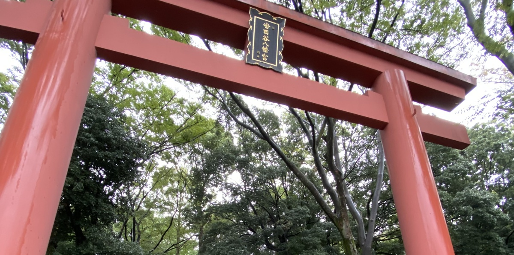
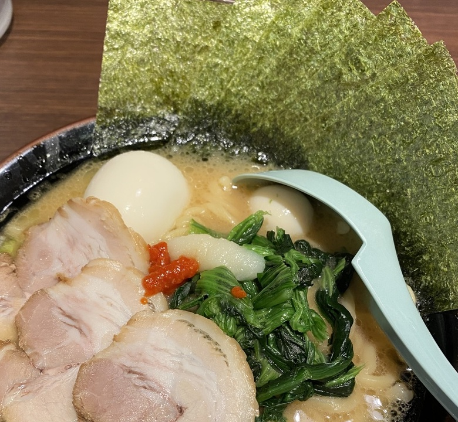
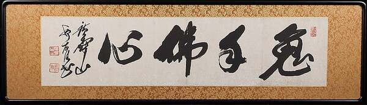

プロフィール・廖翔
名前
廖翔（リョウショウ）
趣味みたいなものは？
剣道かな、ずっとやっているですけど、趣味より習慣かと、でも最近忙しくて、近くの道場との連絡はまだ返信こないから、ちょっと残念。
長所みたいなのはどんなところ？
観察力かな？ついつい細かいことを見つめる、変なところが多いですけど。
ちょこっとだけ自慢できることは？
紙をきれいにきりわける (*｀ω´*)ﾄﾞﾔｯ
最近ちょこっとハマっているものは？
最近は神社巡りにちょっとハマっている、かヶ所にある神社に行き、静かに景色を見ながら、参拝して、御朱印を集めるのは、とても幸せと感じる。
最近ものすごく美味い！と思ったのはなに？
先日食べた横濱家系醬油豚骨ラーメン、とても美味しかった、泣くほどに！

大大大好きな食べ物は？
揚げ物が大好きです、豚カツや、天ぷらや、エビフライなど、そとはサクサク、中はジューシーしてて、香ばしくて、美味い。
ちょっと嫌いな食べ物は？
内臓系な食べ物が苦手、生臭いし、食感も好きじゃないので。
まず家に帰ってすることはなに？
家に着いたら、まずご飯を炊く、一番時間がかかるから、お腹も空いたから。
その次にすることは？
ご飯を炊いてる間に料理したり、飲み物を飲んだり、少し休憩したりします。
平均睡眠時間は？
6～7時間ぐらい、最近睡眠あまりよくない。
朝、出かける何時間前に起きる？
毎朝出かける約2時間前に起きます。
口癖は？
まあ...な
何フェチ？
自分もよくわからないが、多分目か、唇かな。
ロト6で80万当たったら！？
学費として貯める (˶ᐢωᐢ˶)
えらそうな座右の銘は？
①鬼手佛心！ ②一期一会！ ③俺の死に場所は俺がきめる！

18年後なにしてる？
富士山を登っている～～
とりあえず集めてるものは？
軌跡シリーズのゲームディスクずっと集めている。
体を流れている血の液体の型は？
覚えないな、でも両親どちらもA型だから、自分も多分A型です。
なんか前世はこんな人かな？
医者だそうです。
ずばり！○○なタイプです！
え、ちょっと痛いドSで、ヤバいすぎじゃない？